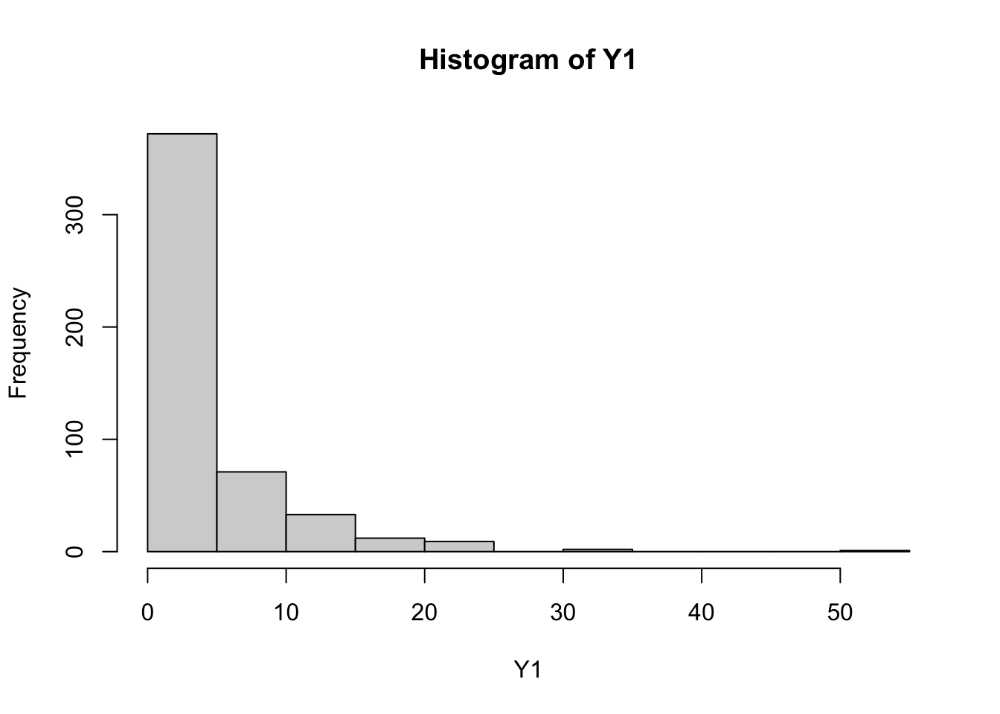
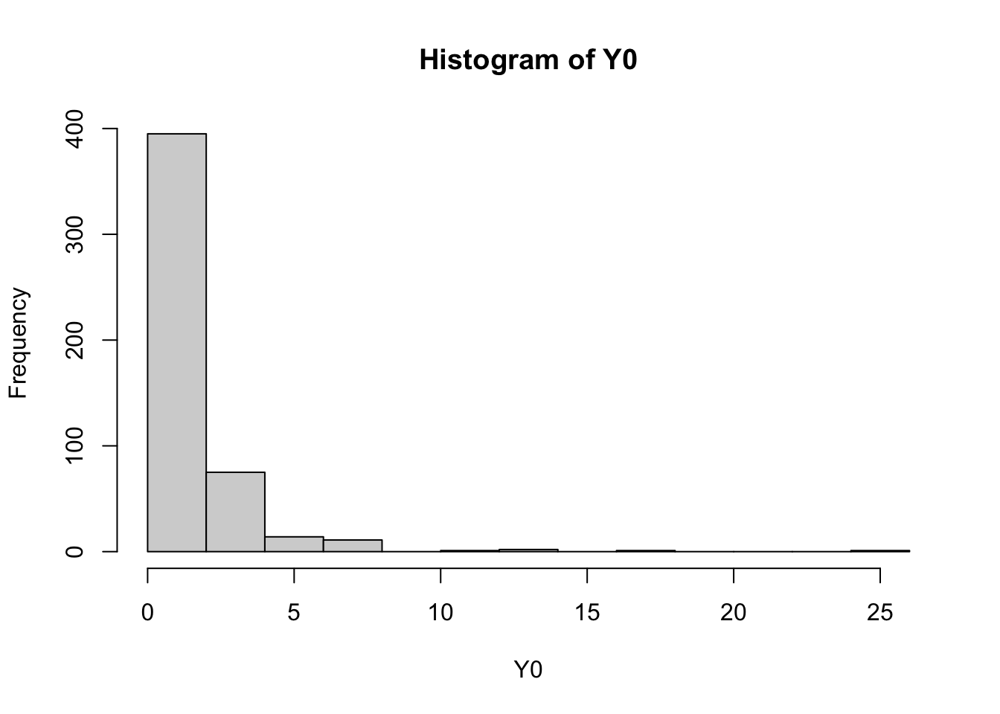
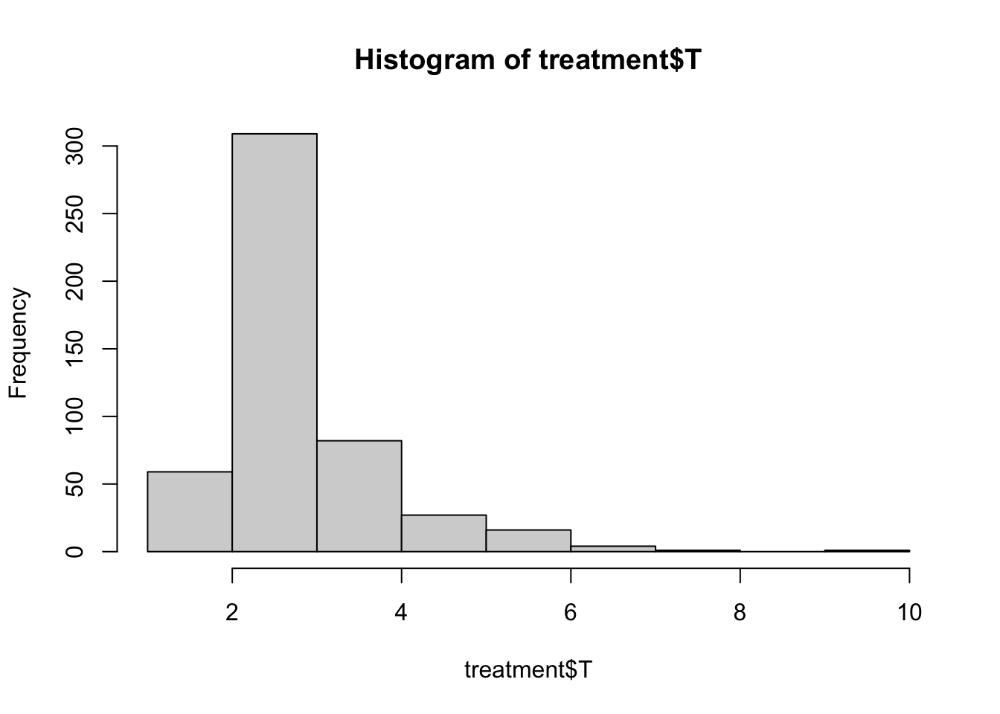

ate <- 1
N <- 500
Y0 <- ifelse(runif(N)<0.9,rlnorm(N),0)
Y1 <- ifelse(runif(N)<plogis(qlogis(0.9) + ate),
rlnorm(N,meanlog=ate),
0)Twitter (or what’s left of it) was recently ablaze with a discussion of two smart working papers, one by Jiafeng Chen and Jonathan Roth and the other by John Mullahy and Edward Norton. In different ways, they argue against the use of non-linear transformations in applied modeling, especially logarithms (logs). I had been meaning to discuss the subject myself; I’ve been critical of the logarithmic transformation previously because it has been difficult to put a clear meaning on the transformation in a linear model. Furthermore, the inability of logs to include 0 (log of 0 is undefined or negative infinity, whichever is smaller) was a warning flag that there was a mismatch between what people wanted the math to do, and what it actually did.
What I’m going to show in this post is that the ordered beta regression model can also address issues with logs (and the related inverse hyperbolic sine transformation) because it can produce estimates (including ATEs) that are based on proportions, and thus naturally scale-free. When the scale of the outcome is an issue, the ordered beta regression can help address that problem by estimating regression coefficients or treatment effects that do not vary with scale and also include 0s.
The two papers presented above approach the log issue in different ways, which makes them both fascinating when read together. Mullahy and Norton take a more traditional econometric approach, discussing how the log and hyperbolic sine transformations are heavily influenced by the constant chosen to either “bump” zeros to 1s for the log or to scale the hyperbolic sine. Chen and Roth use different notation to discuss how the logarithmic transformation affects estimation of an average treatment effect (ATE) using the potential outcomes framework in the causal inference literature.
Both sets of authors point out that these transformations end up changing either linear regression coefficients or estimated ATEs in ways that are not immediately obvious. Using economic theory, Mullahy and Norton discuss how adding 1 to any zero value in a model in order to use logs results in the model weighting estimates by the proportion of 0s and non-0 values in the data, or what they call the “intensive” and “extensive” margin. The regression coefficient will vary depending on whether 0s are replaced by 1, 0.9, 0.8, 0.7… etc. There simply isn’t one good value that can be added to the data to allow a logarithm to be well-defined.
Chen and Roth make the point that the estimate of an ATE can vary with different scaling functions such as logarithms. As they put it,
Our results above show that ATEs for common transformations such as \(log(1 + Y)\) and \(arcsinh(Y)\) can not be interpreted as percentage effects, given that their magnitudes depend arbitrarily on the units of the outcome.
In other words, once you transform the outcome using one of these functions, we no longer know for sure that we will get the same ATE if we change the units, i.e. from dollars to cents, when using one of these common transformations. Chen and Roth’s suggestion, which is similar as well to Mullahy and Norton, is to consider using models that incorporate 0s (two-part models, also known as hurdles/zero-inflated models) or simple GLMs like the Poisson regression, which has had an amazing resurgence on Twitter at the moment. (No idea, though, if Poisson’s momentum will last through the 2024 election.)
Simulation
I next use simulations to discuss this issue to show practically what the authors are talking about and also demonstrate how ordbetareg can estimate scale-free ATEs.
I simulate data that matches what the articles discuss: highly skewed outcomes with zeroes. To do so I’ll simulate a two-part or hurdle model in which the ATE influences the first part (the probability of a 0) and the second part (a conventional log-normal distribution strictly greater than 0). The ATE will influence both the probability of 0s, which at baseline is 10% of total observations, and the mean of the non-0 (log-normal) distribution. I will assume a true ATE of +1 on the log/logit scale. I can then simulate the potential outcomes, Y1 and Y0, as independent distributions with a difference of the ATE.
We can take a quick glance at the distributions:
hist(Y1)
hist(Y0)
The proportion of zeroes in Y0 is 0.086 and the proportion of zeroes in Y1 is 0.034.
We can then do some conventional comparisons of the treatment and control group, a t-test and linear model fit:
t.test(Y1,Y0)
Welch Two Sample t-test
data: Y1 and Y0
t = 11.45, df = 639.8, p-value < 2.2e-16
alternative hypothesis: true difference in means is not equal to 0
95 percent confidence interval:
2.423978 3.427505
sample estimates:
mean of x mean of y
4.330918 1.405176 t_data <- tibble(Y=c(Y0,Y1),T=c(rep(0,N),rep(1,N)))
mod1 <- lm(Y ~ T,data=t_data)
summary(mod1)
Call:
lm(formula = Y ~ T, data = t_data)
Residuals:
Min 1Q Median 3Q Max
-4.331 -1.839 -0.795 0.423 48.338
Coefficients:
Estimate Std. Error t value Pr(>|t|)
(Intercept) 1.4052 0.1807 7.777 1.84e-14 ***
T 2.9257 0.2555 11.450 < 2e-16 ***
---
Signif. codes: 0 '***' 0.001 '**' 0.01 '*' 0.05 '.' 0.1 ' ' 1
Residual standard error: 4.04 on 998 degrees of freedom
Multiple R-squared: 0.1161, Adjusted R-squared: 0.1152
F-statistic: 131.1 on 1 and 998 DF, p-value: < 2.2e-16The linear model and the t-test do not return the true ATE as that was simulated on the log scale. However, if we take the log of the estimate, it is pretty close – log of 2.926 is 1.074. The simulation is not perfect because the ATE will vary across the two parts due to scaling effects, but it will work for our purposes.
As the papers pointed out, the ATE could change if we use nonlinear transformations such as log with an adjustment such as 1 or 0.1 to replace the zeroes. We will test this by fitting two models, one with an outcome of \(log(Y+1)\) and the other with \(log(Y+0.01)\). We can then make a table of the model results with the modelsummary package:
t_data <- mutate(t_data,
Y_1=Y + 1,
Y_01=Y + 0.01)
y_mod1 <- lm(log(Y_1) ~ T,data=t_data)
y_mod2 <- lm(log(Y_01) ~ T, data=t_data)
modelsummary(models=list(`log(Y + 1)`=y_mod1,
`log(Y + 0.01)`=y_mod2))| log(Y + 1) | log(Y + 0.01) | |
|---|---|---|
| (Intercept) | 0.706 | -0.430 |
| (0.029) | (0.067) | |
| T | 0.650 | 1.236 |
| (0.041) | (0.095) | |
| Num.Obs. | 1000 | 1000 |
| R2 | 0.200 | 0.146 |
| R2 Adj. | 0.200 | 0.145 |
| AIC | 4042.5 | 4028.7 |
| BIC | 4057.2 | 4043.4 |
| Log.Lik. | -987.324 | -1822.961 |
| F | 250.073 | 169.999 |
| RMSE | 0.65 | 1.50 |
We can see that the treatment effects are quite different. To get them back on the same scale, we can try a reverse transform (exponential the coefficient):
exp(coef(y_mod1)[2]) - 1 T
0.9159342 exp(coef(y_mod2)[2]) - .01 T
3.433134 We can see that the reverse transform doesn’t improve matters. In either case we end up with a very different coefficient. If we were to interpret the outcome as dollars, such as a salary, then the ATE in the first model would be 0.92 and the ATE in the second would be 3.28. As the papers suggest, changing that constant results in changes in the ATE, and so we need to be careful what constant we choose.
To see if units matters as the papers also propose, we will divide the outcome by 100 and compare to the original outcome while using the same transformation of \(log(Y + 1)\):
t_data <- mutate(t_data,
Y_1_rescale=(Y/100)+1)
y_mod1_rescale <- lm(log(Y_1_rescale) ~ T,data=t_data)
modelsummary(models=list(`log(Y + 1) Original`=y_mod1,
`log(Y + 1) Rescaled`=y_mod1_rescale))| log(Y + 1) Original | log(Y + 1) Rescaled | |
|---|---|---|
| (Intercept) | 0.706 | 0.014 |
| (0.029) | (0.002) | |
| T | 0.650 | 0.027 |
| (0.041) | (0.002) | |
| Num.Obs. | 1000 | 1000 |
| R2 | 0.200 | 0.125 |
| R2 Adj. | 0.200 | 0.124 |
| AIC | 4042.5 | -3735.4 |
| BIC | 4057.2 | -3720.7 |
| Log.Lik. | -987.324 | 1898.213 |
| F | 250.073 | 142.951 |
| RMSE | 0.65 | 0.04 |
Again, we can see that rescaling \(Y\) and then applying the \(log(Y+1)\) transformation results in a remarkably different ATE. Because dividing by a constant doesn’t affect the proportion of zeroes but does affect the non-zero values, the ATE will consequently change when using this transformation.
ordbetareg to the Rescue
While the authors propose some solutions to this problem, such as using a two-part model, I want to show that the ordered beta regression can estimate scale-free ATEs if the outcome is normalized; that is, rescaled to between 0 and 1. Here we will let 0 be equal to 0 while 1 will be the sum of the outcome, i.e., the total income of the sample. We can rescale so that each observation in our data is equal to the proportion of the total. It corresponds to the following estimand, which I’ll call \(ATE_n\) for normalized:
\[ ATE_n = E[\frac{Y1}{Y1+Y0} - \frac{Y0}{Y1+Y0}] \]
Crucially, if we scale the outcome by any value \(c\), \(c\) will cancel as it will be in both the top and bottom of the fraction. We could estimate this quantity with either OLS or a t-test, but the error term is likely to be misleading as it won’t respect the bounds of the outcome (i.e. 0 or 1). This is where ordered beta regression can help. I’ll estimate two models, one with the original outcome and the second with the original outcome multiplied by a 100 to test for scaling effects. I will specify the true_bounds parameter to be 0 and 1 as by definition there will not be any values at the upper bound of 1.
t_data <- mutate(t_data,
Y_n=Y/(sum(Y)),
Y_n_rescale=(Y/100)/(sum(Y/100)))
y_n_mod <- ordbetareg(Y_n ~ T,data=t_data,
chains=1,iter=1000,
true_bounds=c(0,1),refresh=0,
backend="cmdstanr")Running MCMC with 1 chain...
Chain 1 finished in 3.0 seconds.y_n_rescale <- ordbetareg(Y_n_rescale ~ T,data=t_data,
chains=1,iter=1000,
true_bounds=c(0,1),refresh=0,
backend="cmdstanr")Running MCMC with 1 chain...
Chain 1 finished in 3.0 seconds.modelsummary(models=list(`Normalized Y Original`=y_n_mod,
`Normalized Y Rescaled`=y_n_rescale),
statistic="conf.int")| Normalized Y Original | Normalized Y Rescaled | |
|---|---|---|
| b_Intercept | -7.108 | -7.114 |
| [-7.196, -7.011] | [-7.210, -7.012] | |
| b_T | 0.608 | 0.612 |
| [0.507, 0.707] | [0.515, 0.716] | |
| phi | 810.062 | 808.721 |
| [732.567, 888.675] | [714.157, 890.808] | |
| Num.Obs. | 1000 | 1000 |
| R2 | 0.090 | 0.091 |
| ELPD | 5335.8 | 5335.9 |
| ELPD s.e. | 74.6 | 74.7 |
| LOOIC | -10671.5 | -10671.8 |
| LOOIC s.e. | 149.3 | 149.3 |
| WAIC | -10671.6 | -10671.9 |
| RMSE | 0.00 | 0.00 |
As can be seen, both estimates are very close. We can convert these treatment effects to marginal effects using the marginaleffects package:
margin_Y <- marginaleffects(y_n_mod, variables="T")
summary(margin_Y)
Term Contrast Estimate 2.5 % 97.5 %
T mean(1) - mean(0) 0.000887 0.000624 0.00196
Columns: term, contrast, estimate, conf.low, conf.high The treatment effect here is miniscule as it represents the proportion of income in the sample accruing to an individual unit. However, we can transform this back to the original scale by simply multiplying the estimated marginal effect for each posterior draw by the sum of Y1 and Y0:
treatment <- posteriordraws(margin_Y) %>%
distinct(draw) %>%
mutate(T=draw * sum(t_data$Y))
# calculate a summary/point estimate
summary(treatment$T) Min. 1st Qu. Median Mean 3rd Qu. Max.
1.585 2.190 2.542 2.812 3.052 9.119 # plot full distribution/uncertainty
hist(treatment$T)
Doing so gives us a treatment effect of approximately $2.7 dollars on the original scale–or, almost exactly \(log 1\) as per our original true ATE. Importantly, the estimated uncertainty of this ATE, which we can visualize by plotting all the posterior draws as a histogram, reflects the skew of the underlying variable, which in this case we would want to capture.
As the package designer Vincent Arel-Bundock pointed out, I can also do the code above using the marginaleffects package directly with the comparisons function:
treatment2 <- avg_comparisons(y_n_mod,
variables="T",
transform=function(x) x * sum(t_data$Y))
print(paste0("The treatment effect estimate is ",
round(treatment2$estimate,3),
" with a lower bound of ",
round(treatment2$conf.low,3),
" and an upper bound of ",
round(treatment2$conf.high,3),"."))[1] "The treatment effect estimate is 2.543 with a lower bound of 1.788 and an upper bound of 5.631."Conclusion
For these reasons, ordbetareg can be used to produce ATEs that are scale-free yet can be still be back-transformed to the original scale by rescaling the marginal effects as produced by the marginaleffects package. If the aim of the analysis is to estimate an ATE that is comparable across samples and income distributions, yet also doesn’t lose its relation to the original data, then ordbetareg can provide readily comparable estimates.